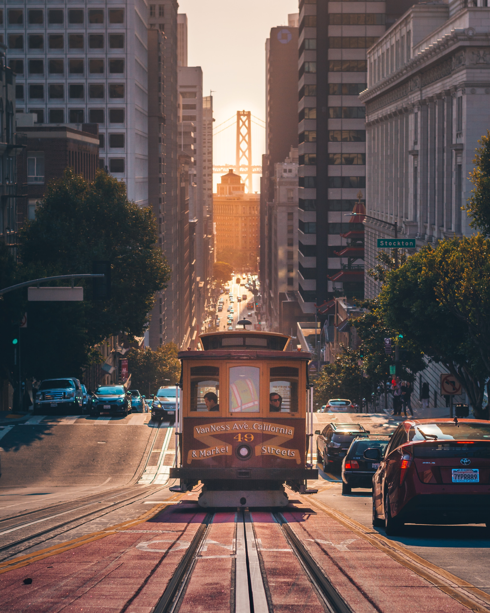

Your Tour Guide
The City by the Bay
San Francisco is located on the West Coast of the United States at the tip of the San Francisco Peninsula and includes significant stretches of the Pacific Ocean and San Francisco Bay within its boundaries.
Today, San Francisco is one of the top tourist destinations in the world, ranking 33rd out of the 100 most visited cities worldwide, and is renowned for its chilly summer fog, steep rolling hills, eclectic mix of architecture, and its famous landmarks, including the Golden Gate Bridge, cable cars, and Chinatown. The city is also a principal banking and finance center, and the home to more than 30 international financial institutions, helping to make San Francisco rank 18th in the world's top producing cities, 9th in the United States, and 13th place in the top twenty global financial centers.
City Statistics
Population 805,235
Area 46.9 square miles
Elevation 52 ft.
Founded 1776